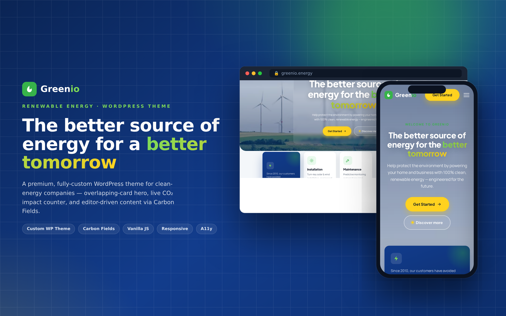
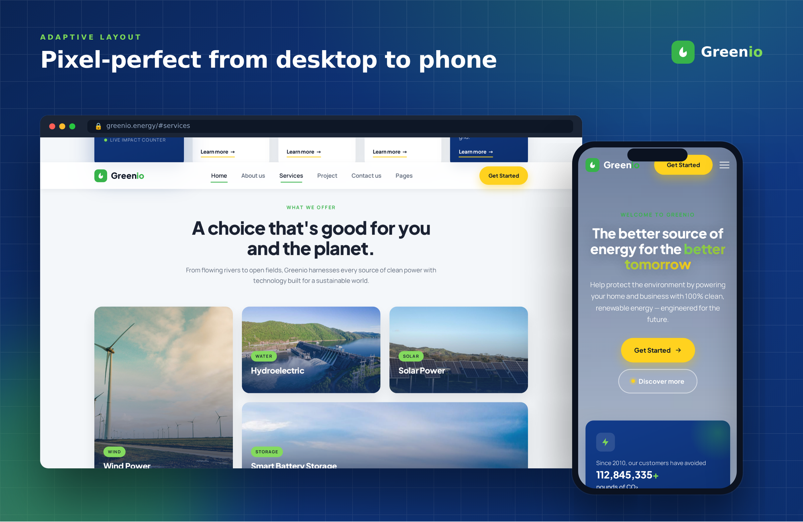
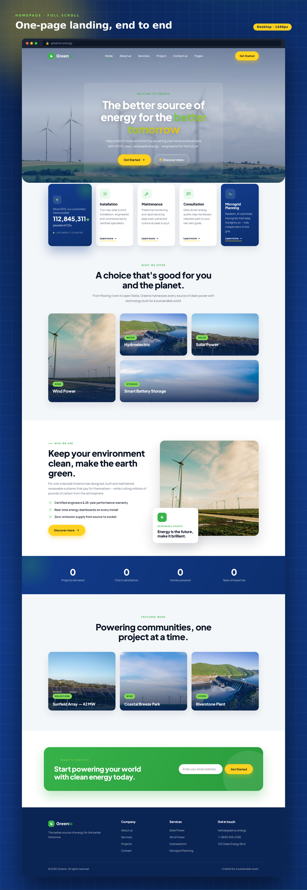
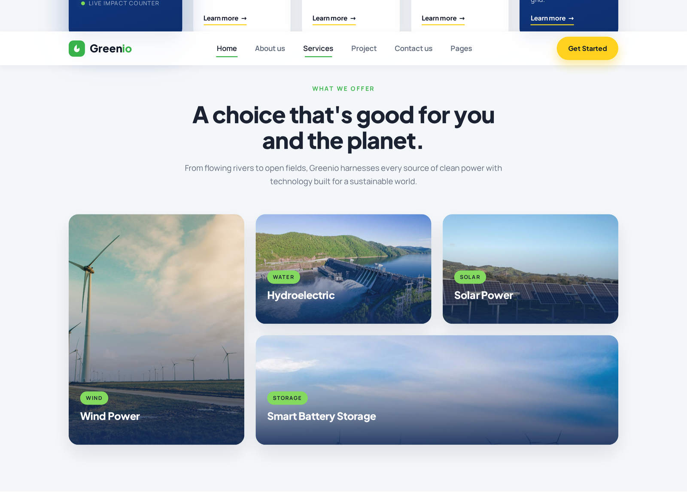
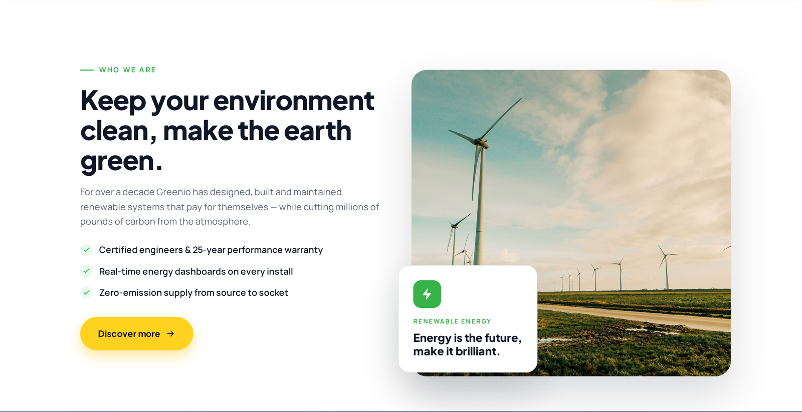
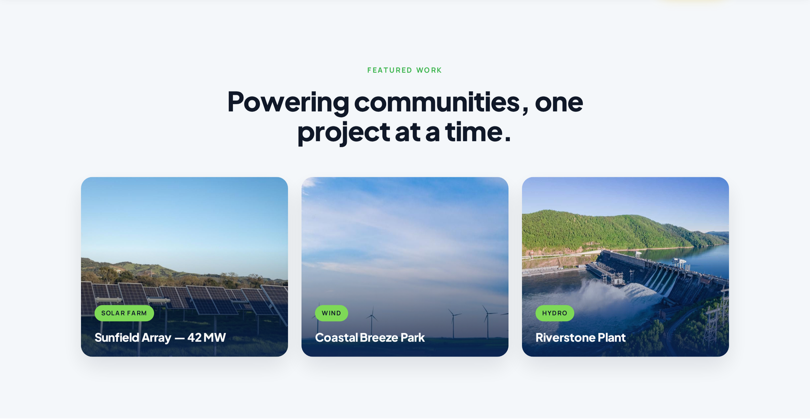
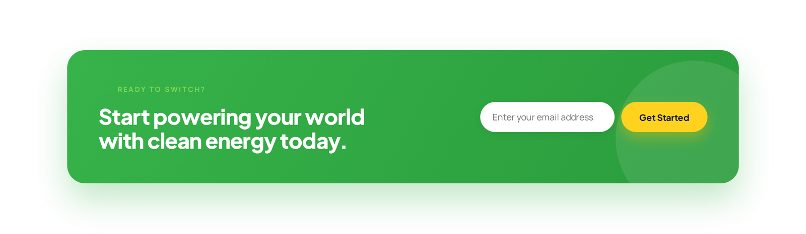

A premium, fully-custom WordPress theme and marketing landing experience for a renewable-energy company — engineered around an overlapping-card hero, a live CO₂-impact counter, and a fully editor-driven content model.
Real, pixel-accurate screenshots captured from the live site (headless Chromium at 1440 px desktop and 390 px mobile), then composed into clean device-framed presentation mockups on a brand-matched gradient stage.







An evidence-based breakdown of what the site communicates, how it guides the visitor, and how it is engineered under the hood — derived strictly from the live markup, stylesheet and JavaScript.
Positioning. Greenio presents itself as a full-service renewable-energy provider with a single, tightly-focused proposition: “The better source of energy for the better tomorrow.” The supporting line — “Help protect the environment by powering your home and business with 100% clean, renewable energy” — immediately signals a dual audience (residential and commercial) and an emotional, sustainability-led benefit rather than a technical spec sheet.
Narrative architecture. The page reads as a deliberate top-to-bottom persuasion funnel:
#contact). The information architecture is single-goal — turn interest into a lead — with no competing exits. That focus is a hallmark of a conversion-oriented landing page rather than a general brochure site.Tone & voice. Confident, benefit-led and lightly technical (“turn-key”, “predictive monitoring”, “AI-optimized microgrids”, “net-zero goals”). It balances aspirational language (“make the earth green”) with credibility markers (“Certified engineers & 25-year performance warranty”, “Real-time energy dashboards on every install”, “Zero-emission supply from source to socket”).
The design is anchored by a 1200 px content container and leans heavily on modern CSS Grid for its most distinctive moments:
margin-bottom:-80px negative margin, creating a layered, magazine-style depth that immediately elevates the page above a typical template.grid-template-areas mosaic ("wind hydro solar" / "wind storage storage") produces a tall card + wide card composition that fills the full width with no ragged gaps — and gracefully collapses to an even 2-column layout on tablet.left/bottom values so it deliberately overhangs the photograph, reinforcing the layered aesthetic.A disciplined three-tone system does a lot of semantic work: deep blue conveys trust and engineering rigour (headers, stat cards, bands), green carries the sustainability message (tags, icons, the closing CTA), and a single high-contrast yellow is reserved almost exclusively for primary action buttons — so the eye is trained to associate yellow with “do this next.” The hero headline uses a green→yellow gradient clip for a premium accent.
Two Google families create a clear hierarchy: Plus Jakarta Sans (800 weight, tight -.02em tracking) for headings gives a modern, confident display voice, while Manrope handles body copy for comfortable reading at a generous 1.65–1.7 line-height. Headlines scale fluidly with clamp() so type never breaks between breakpoints.
Motion is used to reward scrolling, not to distract:
IntersectionObserver, with a staggered --i delay across the hero cards.prefers-reduced-motion, counters snap straight to their final value, a skip-to-content link is present, ARIA attributes drive the mobile drawer, and the colour system maintains strong contrast. This is craft-level polish, not decoration.| Breakpoint | Key adaptation |
|---|---|
| ≤ 1080px | Hero float-row folds to 2 columns; energy grid drops its grid-areas for an even 2-up; card hover-copy is shown by default. |
| ≤ 900px | Navigation becomes a right-side slide-in drawer with a hamburger toggle; About stacks; footer goes 2-column. |
| ≤ 640px | Everything collapses to a single column; hero background goes full-bleed; buttons go full-width; the glass hero card becomes transparent. |
The site is delivered as a fully-custom WordPress theme (not a page-builder). The front end is intentionally lean: a single semantic HTML document, one hand-authored stylesheet organised into tokenised sections, and one dependency-free JavaScript module wrapped in an IIFE. There is no jQuery, no framework runtime and no CSS utility bloat — everything shipped is bespoke.
The stylesheet opens with a :root block that centralises the entire design language — colour scales, radii, a graduated shadow system (--shadow-sm/md/lg/blue), the two font stacks, the max-width and a shared easing curve (cubic-bezier(.2,.7,.2,1)). Every component references those tokens, so the theme is trivially re-skinnable.
Editorial content is fully editor-driven through Carbon Fields, a free, open-source, MIT-licensed field library bundled directly inside the theme via Composer (no premium plugin required). The implementation exposes:
complex) field groups for the Services grid, the Stats band and the Featured-projects gallery, plus the hero and CTA copy.requestAnimationFrame, scroll listeners are {passive:true}, and observers unobserve once fired.IntersectionObserver feature-check falls back to simply showing content if unsupported.display=swap; an inline SVG favicon; SVG icons inlined to avoid extra requests.header/main/section/footer).| Layer | Choice |
|---|---|
| Platform | WordPress (custom theme, PHP) |
| Content model | Carbon Fields — theme options + repeatable front-page groups |
| Layout | CSS Grid + Flexbox, CSS custom-property token system |
| Interactions | Vanilla ES5-safe JavaScript (IntersectionObserver, rAF) |
| Type | Plus Jakarta Sans (display) + Manrope (body), Google Fonts |
| Media | CSS background images with gradient overlays; inline SVG iconography |
Greenio is a premium, fully-custom WordPress theme and single-page marketing experience built for a renewable-energy company that installs, maintains and consults on clean-power systems for both homes and businesses. The project translates an ambitious brand promise — “the better source of energy for the better tomorrow” — into a polished, conversion-focused website that feels modern, trustworthy and unmistakably purpose-driven.
The design is organised as a guided, top-to-bottom story. A cinematic hero — a full-bleed wind-farm photograph beneath a soft glass headline card — opens the page, immediately followed by a signature overlapping-card row that floats a live CO₂-impact counter and the company’s core services up over the section below, giving the layout a layered, editorial depth that sets it apart from typical templated sites. From there the narrative moves through an asymmetric energy showcase (wind, water, solar and battery storage), a warm about story backed by concrete credibility points, an animated impact band of headline metrics, a featured-projects gallery, and finally a bold, high-contrast call-to-action that captures leads by email.
Visually, the theme runs on a disciplined three-colour system — a trust-building deep blue, a sustainability-signalling green, and a single high-energy yellow reserved for primary actions — paired with a confident Plus Jakarta Sans / Manrope type hierarchy and a consistent set of soft shadows and rounded corners. Motion is used with restraint and craft: sections reveal on scroll, numbers count up as they enter view (with the CO₂ figure ticking live to dramatise ongoing impact), the header condenses into a blurred glass bar, and cards respond to hover — yet every effect is disabled automatically for visitors who prefer reduced motion.
Under the hood, the site is engineered to be fast, maintainable and framework-free. The layout is built on modern CSS Grid driven by a centralised design-token system, and all interactivity is delivered by a single, dependency-free vanilla-JavaScript module using IntersectionObserver and requestAnimationFrame for smooth, efficient behaviour. Content is fully editor-managed through Carbon Fields — a free, open-source field library bundled into the theme — which surfaces a Theme-Options panel for brand assets and repeatable front-page field groups for services, statistics and projects, all with graceful fallbacks so the layout never breaks when a field is left empty. The result is responsive from a wide desktop grid down to a single-column phone, accessibility-minded (skip link, ARIA controls, semantic landmarks, keyboard-friendly navigation) and ready to hand to a non-technical marketing team.
Elevator version: Greenio is a fast, fully-custom WordPress landing experience for a clean-energy brand — a layered overlapping-card hero, live CO₂-impact counters, an asymmetric energy showcase and a lead-capturing CTA, all built on CSS Grid and dependency-free JavaScript, with content managed end-to-end through open-source Carbon Fields.